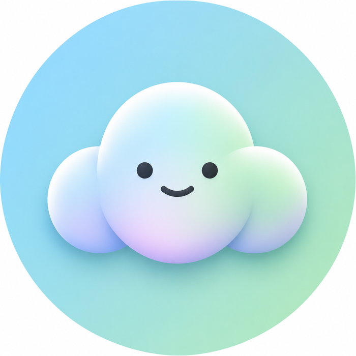
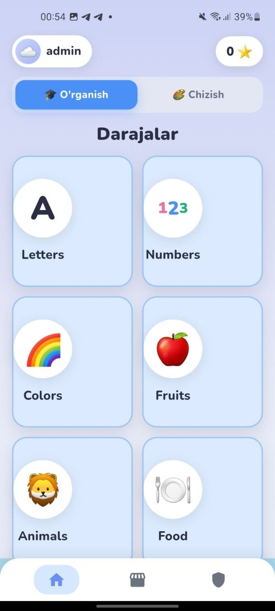
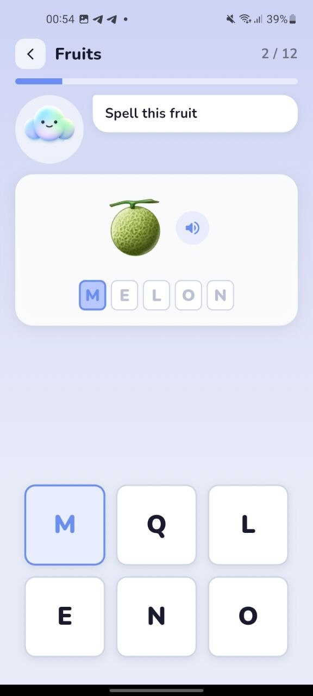
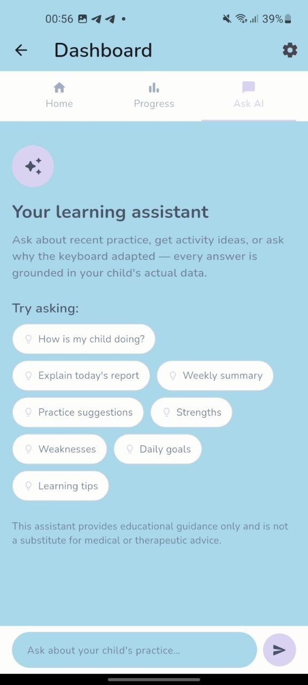
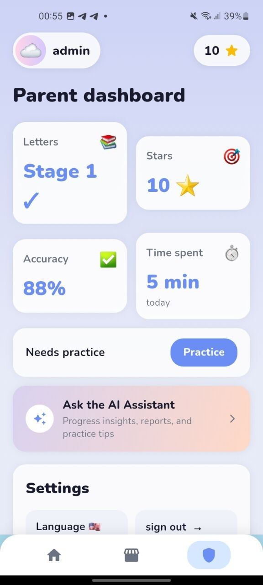

FlexiKeys
Small steps. Big progress.
Cerebral paralich va harakat qiyinchiliklari bo'lgan bolalar uchun moslashuvchan ta'lim platformasi
Адаптивная образовательная платформа для детей с церебральным параличом и двигательными трудностями
Nega FlexiKeys yaratildi
Почему появился FlexiKeys
Muallif · Автор
Shoxjahon
Bu yerga loyiha muallifining shaxsiy hikoyasi, FlexiKeysni yaratishga turtki bo'lgan voqea va samimiy motivatsiya qo'shiladi. Haqiqiy tajriba va his-tuyg'ular — o'ylab topilgan gaplar emas.
Здесь будет личная история автора проекта — что подтолкнуло к созданию FlexiKeys и какая мотивация стояла за этим. Реальный опыт и искренние слова — без преувеличений и вымысла.
Raqamli dunyo hammaga bab-baravar emas
Цифровой мир не для всех одинаково доступен
Standart klaviatura va ekran teginishlari aniq, tez motorika harakatlarini talab qiladi
Стандартные клавиатуры и сенсорные экраны требуют точных и быстрых моторных движений
Kichik tugmalar va tor teginish maydonlari cerebral paralich yoki boshqa harakat qiyinchiliklari bo'lgan bolalar uchun qiyinchilik tug'diradi
Маленькие кнопки и узкие зоны нажатия усложняют работу детям с ДЦП и другими двигательными особенностями
Ko'pgina ta'lim ilovalari "hammaga bitta o'lcham" tamoyili bilan yaratilgan, individual moslashuvsiz
Большинство образовательных приложений создаются по принципу «один размер для всех», без индивидуальной адаптации
Natijada bu bolalar raqamli ta'lim imkoniyatlaridan chetda qolib ketmoqda
В результате такие дети часто остаются в стороне от цифрового образования
Umumiy pedagogika va inklyuziv dizayn tamoyillariga asoslangan · Основано на общих принципах инклюзивной педагогики и дизайна
Mavjud yechimlar yetarli emas
Существующих решений недостаточно
Klaviatura o'lchami, oraliq va bosish vaqtini moslashtirish imkoniyati kam uchraydi
Возможность настройки размера клавиш, интервалов и времени нажатия встречается редко
Moslashuv odatda ota-onadan qo'lda sozlashni talab qiladi — yoki bunday imkoniyat umuman yo'q
Адаптация обычно требует ручной настройки родителем — либо вовсе отсутствует
Ota-onalar uchun tushunarli, amaliy taraqqiyot hisobotlari kamdan-kam taqdim etiladi
Понятные и практичные отчёты о прогрессе для родителей предоставляются редко
Ko'pchilik yechimlar bir nechta tilda ishlamaydi, bu esa mintaqaviy oilalar uchun to'siq bo'ladi
Многие решения не поддерживают несколько языков, что создаёт барьер для региональных семей
Bu — mavjud vositalarni tanqid qilish emas, balki qondirilmagan ehtiyojni ko'rsatish.
Это не критика существующих инструментов, а указание на неудовлетворённую потребность.
FlexiKeys bilan tanishing
Знакомьтесь — FlexiKeys
Bu nima? Что это?
3–10 yoshli bolalar uchun yozish, savodxonlik va raqamli muloqot ko'nikmalarini o'rgatuvchi moslashuvchan ta'lim platformasi.
Адаптивная образовательная платформа, обучающая детей 3–10 лет печати, грамотности и цифровому взаимодействию.
Kim uchun? Для кого?
Avvalambor cerebral paralich va boshqa harakat qiyinchiliklari bo'lgan bolalar uchun — va har qanday bola uchun mukammal ishlaydigan tarzda.
В первую очередь для детей с ДЦП и другими двигательными трудностями — и при этом идеально работает для любого ребёнка.
Qanday yordam beradi? Как помогает?
Klaviatura, tezlik va yordam darajasi har bir bolaning haqiqiy ishlashiga qarab avtomatik moslashadi.
Клавиатура, скорость и уровень подсказок автоматически адаптируются под реальную работу ребёнка.
Falsafamiz Философия
Moslashuvchan tizim — mahsulotning yuragi. Hech qachon stigma yo'q, hech qachon "muvaffaqiyatsizlik" yo'q — faqat taraqqiyot.
Адаптивный движок — сердце продукта. Никакой стигмы, никаких «неудач» — только прогресс.
Ilovadan real ko'rinishlar
Реальные экраны приложения

Bosh sahifa · Darajalar
Главный экран · Уровни
Bola o'zi tanlaydigan mavzular: harflar, raqamlar, ranglar, hayvonlar va boshqalar.
Темы, которые ребёнок выбирает сам: буквы, цифры, цвета, животные и другое.

O'rganish · Moslashuvchan klaviatura
Обучение · Адаптивная клавиатура
Tovush, tasvir va katta tugmali klaviatura bir joyda — har bir bosishni kuzatib, sekin-asta moslashadi.
Звук, изображение и крупная клавиатура вместе — отслеживает каждое нажатие и постепенно адаптируется.

AI Yordamchi
ИИ-ассистент
Ota-onalar uchun — bolaning haqiqiy ma'lumotlariga asoslangan javoblar va tavsiyalar beradi.
Для родителей — даёт ответы и рекомендации на основе реальных данных ребёнка.

Ota-ona paneli · Taraqqiyot
Родительская панель · Прогресс
Aniqlik, vaqt, yulduzchalar va nima ustida ishlash kerakligi — bir qarashda.
Точность, время, звёзды и над чем стоит поработать — всё на одном экране.
Barcha suratlar — ilovaning haqiqiy ishlayotgan versiyasidan. Все изображения — из реально работающей версии приложения.
FlexiKeys qanday ishlaydi
Как работает FlexiKeys
Bola
Ребёнок
O'rganish
Обучение
Mashq
Практика
Mukofotlar
Награды
Taraqqiyot
Прогресс
Ota-ona paneli
Родительская панель
Doimiy takomillashtirish
Постоянное улучшение
Asosiy imkoniyatlar
Ключевые возможности
Moslashuvchan o'rganishАдаптивное обучение
Har bir bolaning haqiqiy natijasiga qarab real vaqtda moslashadi
Подстраивается в реальном времени под фактические результаты ребёнка
Moslashuvchan klaviaturaАдаптивная клавиатура
Tugma o'lchami, oraliq va bosish vaqti individual sozlanadi
Размер клавиш, интервалы и время нажатия настраиваются индивидуально
AI YordamchiИИ-ассистент
Ota-onalar uchun haqiqiy ma'lumotlarga asoslangan tushuntirishlar
Объяснения для родителей на основе реальных данных
O'yinlashtirishГеймификация
Yulduzchalar va mukofotlar faqat o'yin orqali qo'lga kiritiladi
Звёзды и награды зарабатываются только через игру
Ota-ona paneliРодительская панель
Nima o'zgargani va nega — tushunarli tilda
Что изменилось и почему — простым языком
Taraqqiyot tahliliАналитика прогресса
Har bir ko'nikma bo'yicha aniqlik va o'zlashtirish darajasi
Точность и уровень освоения по каждому навыку
Ko'p tillilikМногоязычность
O'zbek, rus va ingliz tillarida to'liq qo'llab-quvvatlash
Полная поддержка узбекского, русского и английского языков
Kimlarga foydali
Кому это будет полезно
Bolalar
Дети
Ota-onalar
Родители
Maktablar
Школы
Reabilitatsiya markazlari
Реабилитационные центры
Nutq terapevtlari
Логопеды
Ergoterapevtlar
Эрготерапевты
Tibbiyot mutaxassislari
Медицинские специалисты
Ta'lim tashkilotlari
Образовательные организации
Haqiqiy foydalanuvchilar bilan sinov boshlanmoqda
Начинается тестирование с реальными пользователями
FlexiKeys hozircha real oilalar va mutaxassislar bilan sinov bosqichiga kirmoqda. Quyidagi bo'limlar sinov davomida to'ldirib boriladi.
FlexiKeys сейчас выходит на этап тестирования с реальными семьями и специалистами. Разделы ниже будут заполняться по ходу тестирования.
Ota-onalar fikri
Отзывы родителей
Terapevtlar fikri
Отзывы терапевтов
Fotosuratlar
Фотографии
Videolar
Видео
Yaxshilanishlar
Улучшения
Bizning maqsadimiz
Наше видение
Ochiq ta'lim — har bir bola, imkoniyatidan qat'i nazar, sifatli ta'limga ega bo'lishi kerak
Доступное образование — каждый ребёнок, независимо от возможностей, заслуживает качественного обучения
Raqamli mustaqillik — bola o'ziga yordam kutmasdan, o'zi mustaqil harakat qila olishi
Цифровая независимость — ребёнок действует самостоятельно, а не ждёт постоянной помощи
Bola bilan birga o'sadigan texnologiya — moslashuv doimiy va sekin, hech qachon bolani ortda qoldirmaydi
Технология, растущая вместе с ребёнком — адаптация постепенная и постоянная, никогда не оставляет ребёнка позади
Kelajak yo'nalishi — ko'proq tillar, ko'proq mutaxassislar bilan hamkorlik, kengroq sinov
Дальнейший путь — больше языков, больше сотрудничества со специалистами, более широкое тестирование
Rahmat! Спасибо!
Savollaringiz bo'lsa, bemalol bog'laning
Если есть вопросы — будем рады пообщаться